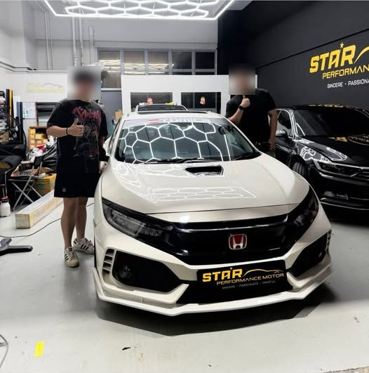

A high-mileage used car can be worth buying in Singapore if it has been well maintained, the service history is clear and the price reflects the wear. Mileage alone does not decide it, so inspect the car and ask what has been fixed before you pay in full.

Mileage tells you less than maintenance does
Two cars can show the same mileage and be in very different shape. One was serviced on time by a workshop that kept records. The other was left alone for long stretches. The first is usually the safer buy. So the question is not only how far the car has gone, but how well it was looked after on the way.
We have already written a guide on how to check a used car's mileage and service history, so we will not repeat it here. This article is about what to do once you have found a car with higher mileage and a lower price.
What higher mileage usually means
A car that has done more distance has had more time for parts to wear. In general, expect to look closely at these:
- Suspension parts such as bushes, arms and shock absorbers
- Steering components
- Brakes, tyres and wheel bearings
- Engine and gearbox mounts, and any fluid leaks
- Cabin wear on the driver's seat, steering wheel and switches
None of this is a reason to panic. These are wear items, and they can be replaced. What matters is whether it has been done, who did it, and what it costs you now.
A higher-mileage Lexus that sold in 2 days
In August 2026 we had a Lexus ES300h Luxury priced below market because of its higher mileage. It sold within 2 days after one viewing. The buyer could see how well the car had been maintained, and the records backed that up. He collected it 3 days later. The lower price was real value because the care behind the car was real too.
A higher-mileage Civic that needed work first
Not every higher-mileage car is that easy. In August 2026 a first-time buyer wanted a Honda Civic FC1 that was priced competitively because of its mileage. When it arrived, our own inspection found that the steering rack needed replacing, and there was a loud noise from the undercarriage.
We told him everything before he viewed it. We declined his deposit and reserved the car on a gentleman's agreement. Within 3 days the steering rack was replaced, the undercarriage issue was fixed and the car was serviced. He then test drove it again and bought it. He knew exactly what had been done, and that is what made the price fair.

How to check a higher-mileage car
- Ask for the service history and read it, not just glance at it.
- Book a pre-purchase inspection at your own workshop, and you can find a workshop near you on sgcarworkshop.sg.
- Test drive on different roads. Listen for noises from the suspension and underside, and feel the steering.
- Ask what the dealer has already fixed, and ask to see it in writing.
- Ask what is likely to need attention soon, and what that might cost.
Questions worth asking the seller
A calm, direct conversation tells you a lot. Ask why the car is being sold and how it was used. Ask who serviced it and whether the invoices are available. Ask whether any major parts have been replaced, and when. A seller or dealer who answers openly, and who is happy for you to take the car to a workshop, is usually one you can work with. Vague answers are a signal to slow down.
It also helps to be honest with yourself about your own plans. If you drive a lot every week, a car that has already done a lot of distance will need attention sooner. If you drive little, the same car may suit you well. Budget a sensible amount for repairs after purchase, whatever the car.
Moving up from a long-owned car
In July 2026 a buyer was moving from his Subaru of 9 years to a continental car. Continental cars can be costly if they are not looked after, so we inspected the car before buying it in, inspected it again on arrival, and fully serviced it. Checking twice means fewer surprises for the person who ends up driving it.
When a lower price is good value
A lower price is good value when the history is clear, the inspection is clean or the faults are fixed, and the discount is fair for the work the car may still need. Our sold cars page shows the kind of cars we have placed with buyers.
When to walk away
- The seller will not let you inspect the car at your own workshop.
- The service history is missing or does not add up.
- The inspection finds serious problems and nobody offers to fix them or adjust the price.
- You feel rushed to pay a deposit before you have seen the facts.
For other makes and models, see how we think about a used BMW sedan and a used Toyota Vellfire. If you want to talk through a particular car, our used car buying service is the place to start, or contact us directly. For any COE, PARF or loan questions, check LTA OneMotoring.
Related guides: Buying a used BMW 5 Series (G30) in Singapore: what to check · Buying a used Toyota Vellfire in Singapore: a buyer's checklist
Frequently asked questions
Is a higher-mileage car always cheaper to own?
Not always. The lower price can be offset by repairs that are due soon, so ask for the service history and an inspection report before you decide.
Should I get an inspection for a higher-mileage car?
Yes. A pre-purchase inspection at a workshop you choose shows the real condition of wear items such as steering, suspension and brakes.
What if the dealer finds a fault after the car arrives?
A good dealer tells you before you view it and fixes the fault before handover. We did this with a Honda Civic FC1 and reserved it without taking a deposit until the repairs were done.
When should I walk away from a higher-mileage car?
Walk away if the history is missing, you cannot have it inspected, or serious faults are found and nobody will fix them or adjust the price.